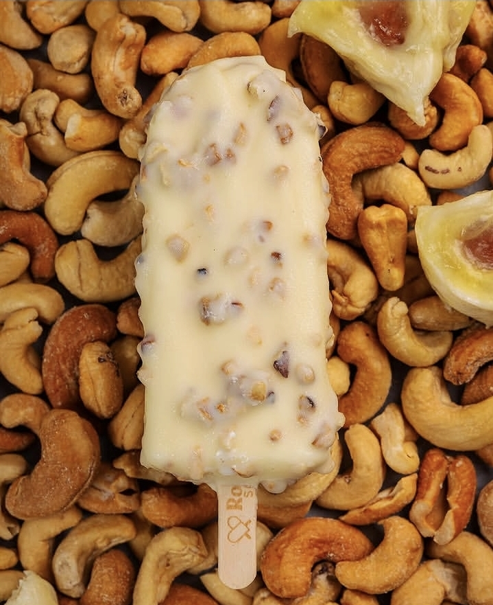
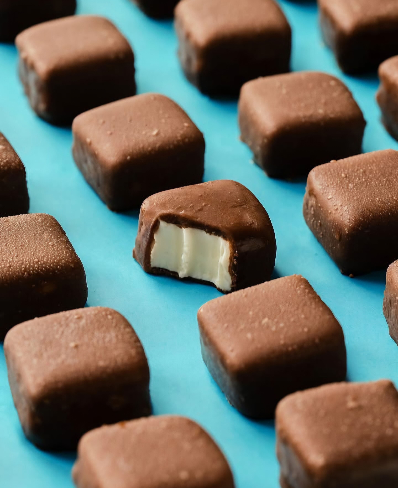
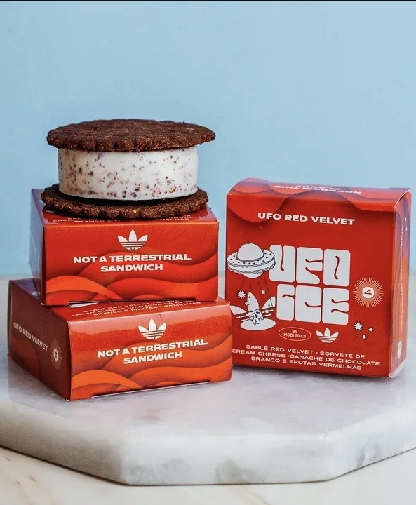

Um dos favoritos da casa. Fica no coração da cidade e tem opções muito legais que já justificam por si só um rolê pelo Centro — sorveteria com identidade, não só ponto de passagem.
Guia da Semana · 17 de setembro de 2026
Do clássico do litoral ao queridinho do Copan — um giro por cinco sorveterias que valem a visita, pra todo perfil e todo bolso.
Um dos favoritos da casa. Fica no coração da cidade e tem opções muito legais que já justificam por si só um rolê pelo Centro — sorveteria com identidade, não só ponto de passagem.
Sorvete muito bom — difícil não encontrar cheia nos finais de semana. O hype se justifica, mas a fila de 40 minutos, nem sempre. Bônus: dentro do Copan, eles também têm café e outras delícias que valem muito a visita.
Clássico do litoral paulista, seja no picolé (a groselha é a queridinha) ou na massa de sorvete tradicional. Sabor de infância pra muita gente.

Sorvete em conta — e em dia quente na capital, isso tem muito valor, principalmente porque sempre tem um por perto. Tipo aquele mercadinho de esquina: ninguém julga, todo mundo recorre.

Sorvete gostoso de verdade. Se não pegar aquela fila gigante do começo, super vale a pena provar — o cookie com sorvete deles é imperdível.
